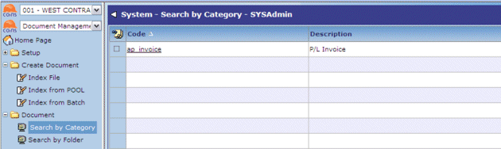
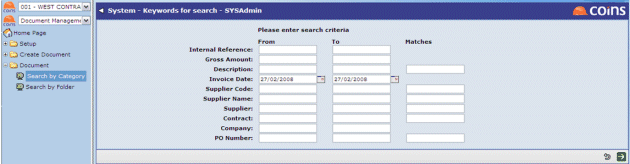
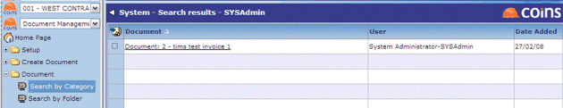

Document Management allows you to search for documents (whether manually attached or auto indexed). Searching can be filtered by Category (document type) or folder.

Search by Category (P/L Invoice in example below) - searching can be performed by using any keyword or a combination of keywords.

Documents are returned based on search criteria.

Search by Folder will only return documents (P/L Invoices) that have been indexed via Document Management (that is, scanned via the Document Management scanning application).